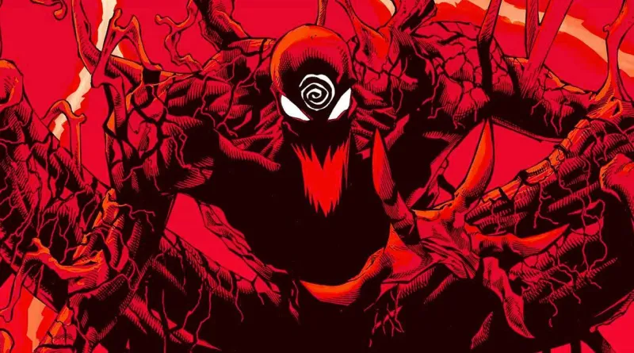
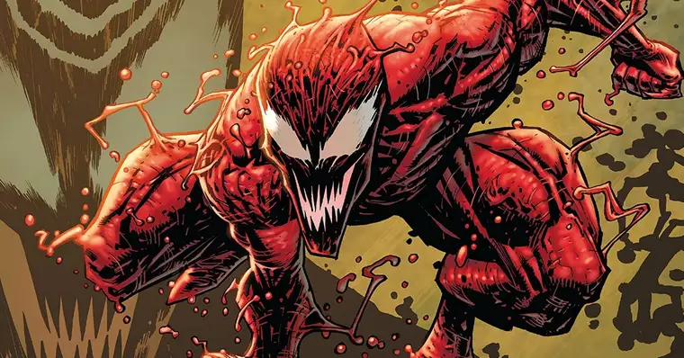

Carnificina é um simbionte alienígena, uma forma mais violenta e instável do simbionte Venom. Quando se funde com seu hospedeiro, Cletus Kasady, o simbionte assume uma aparência semelhante a Venom, mas com um tom de vermelho mais vivo. Diferente de Venom, Carnificina possui uma aparência mais desfigurada e possui extensões de simbionte que podem se transformar em lâminas afiadas e outros apêndices mortais.
No entanto, ele é ainda mais poderoso e imprevisível do que Venom. Além disso, Carnificina tem a habilidade única de moldar seu simbionte em armas brancas mortais, tornando-o um oponente extremamente perigoso em combate.
| CARNIFICINA | CLETUS KASADY | NORMAN OSBORN | BEN REILLY | SURFISTA PRATEADO | ARTHUR KRANE | DR. TANIS NIEVES | EDDIE BROCK | JOHN JAMESON | JOHN JAMESON | DR. KARL MALUS |
Cletus Kasady era um assassino em série antes de se tornar o hospedeiro de Carnificina. Ele foi preso e enviado para a mesma cela onde Eddie Brock (Venom) estava detido. Durante uma tentativa de fuga, o simbionte Venom deixou uma pequena porção de si mesmo na cela, que se fundiu com o sangue de Kasady e deu origem a Carnificina.
Carnificina rapidamente mostrou sua natureza brutal e sanguinária, espalhando caos e destruição por onde passava. Ele é conhecido por seu prazer em matar e sua falta de remorso, tornando-se um dos vilões mais aterrorizantes do universo Marvel.
Ao longo dos anos, Carnificina enfrentou o Homem-Aranha, Venom e vários outros heróis e anti-heróis do universo Marvel. Ele formou alianças com outros vilões e também liderou seu próprio grupo de criminosos chamado "Família Carnificina". Suas ações e crimes o colocaram em confronto com uma ampla variedade de personagens do universo Marvel.
Carnificina foi adaptado para outras mídias, incluindo jogos de videogame, desenhos animados e o filme "Venom: Tempo de Carnificina" (2021), onde foi interpretado por Woody Harrelson.
Em resumo, Carnificina é um vilão sádico e perigoso que possui um simbionte alienígena, sendo uma versão mais brutal e instável do simbionte Venom. Sua história é marcada por violência, caos e confrontos com diversos heróis do universo Marvel.
